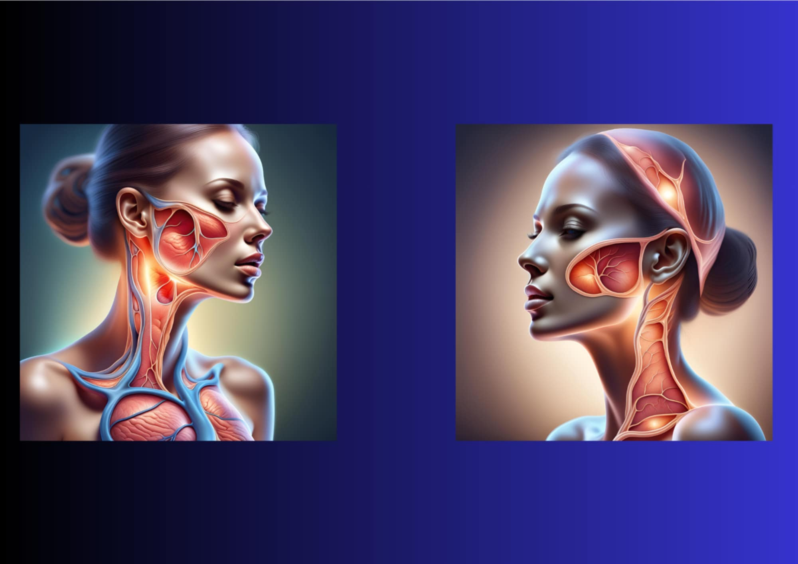

Kobieta — Głowa i szyja

Najczęstsze dolegliwości
Ból głowy (napięciowy / migrena)
Stres, brak snu, odwodnienie...
Ból szyi / karku
Przeciążenie, dyskopatia szyjna...
Zatoki / twarz / gardło
Wirusowe częstsze niż bakteryjne...
Co dalej? Wybierz w menu lub wróć.